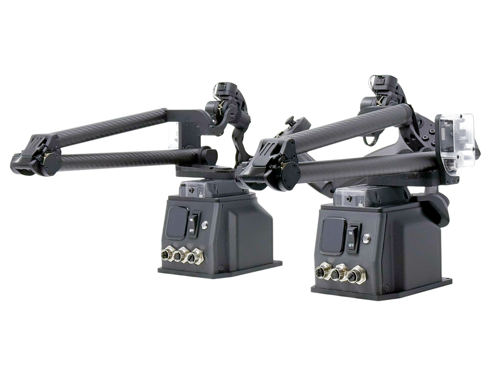

Glide
Variants Single Arm · Left-Right Pair · Full Assembly
Where a figure differs between variants, the main figure names its variant.
Trossen Robotics Glide is a teleop exoskeleton from the United States.
Sources retrieved: (A, B)
- Applications
- Indicative price · Single Arm variant
- 2,495USD
- Source and note: Indicative priceB trossenrobotics.com/glide · Retrieved Caveat. 2,495 USD for Glide Single Arm, 4,990 USD for Left-Right Pair, and 6,995 USD for Full Assembly (Glide Pair + Cockpit station); academic and startup pricing offers 20% off on first order where applicable.

Manufacturer's own photo.
Specifications
3 of 11 stated 8 not stated
8 fields hidden
How to read the figuresShow guideClose
- not statedNo source
- noStated by a source
- 0Reported as zero
- ASource
- A*Source with a caveat (select it)
- VariantsDiffers between variants
- CERecords only what the manufacturer states regarding CE marking.
Select a source marker for source details and notes.
Performance0/2 disclosed
Physical0/1 disclosed
Sensing and connectivity2/3 disclosed
Commercial1/1 disclosed
- Variants
- Full Assembly
- 6,995 USD
- Left-Right Pair
- 4,990 USD
Compliance & certifications0/4 disclosed
Against the field
Each strip holds every device of this type in the guide that states the figure, one bar per group of values. Further right means a larger figure, not a better device. A taller bar means more devices in that group.
Indicative price · Single Arm variant
2,495USD
2 teleop exoskeletons state a public price
0 state a higher figure, 1 a lower one. Log scale: each step along the axis multiplies the value.
Notes
Trossen Robotics describes Glide as a teleoperation hardware system with passive, encoder-only joints, deep-groove bearing pairs, and a passive spring-and-cam carbon-fiber balance for physical AI data collection.
Intended use, per the manufacturer. “BUILT FOR REAL-WORLD RESEARCH ENVIRONMENTS. COVERS DEFECTS IN MATERIALS AND WORKMANSHIP. WEAR COMPONENTS ARE FIELD-REPLACEABLE AND READILY AVAILABLE.”
Sources
One line per source, not per figure: a source has one retrieval date.
- Atrossenrobotics.com/data-collection-sdkSecondary. Retrieved
- Btrossenrobotics.com/glideMain source. Retrieved
More devices
Same manufacturer

All devices from Trossen Robotics